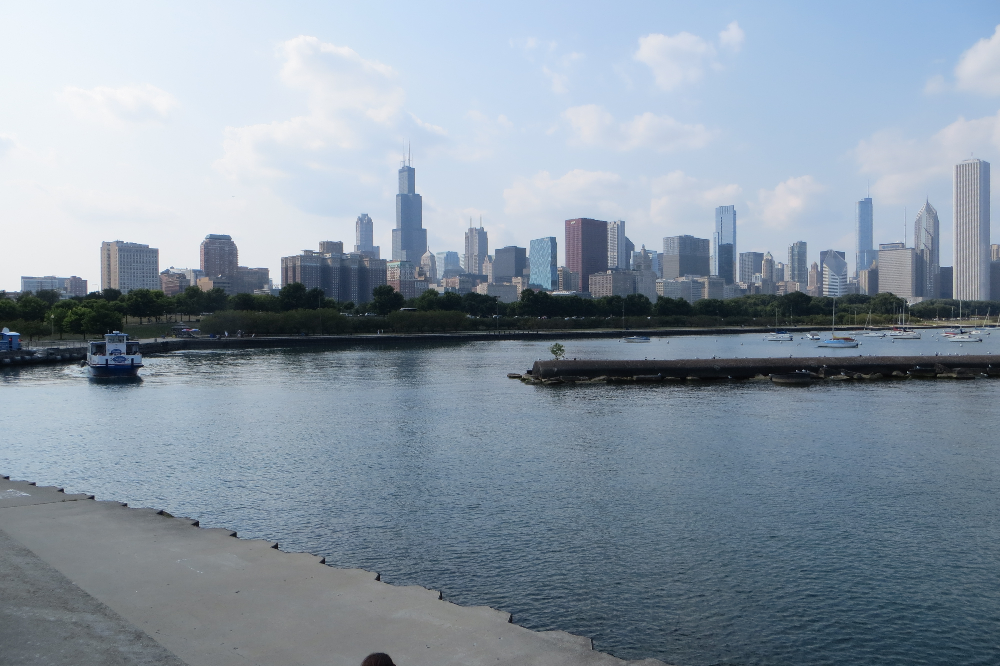
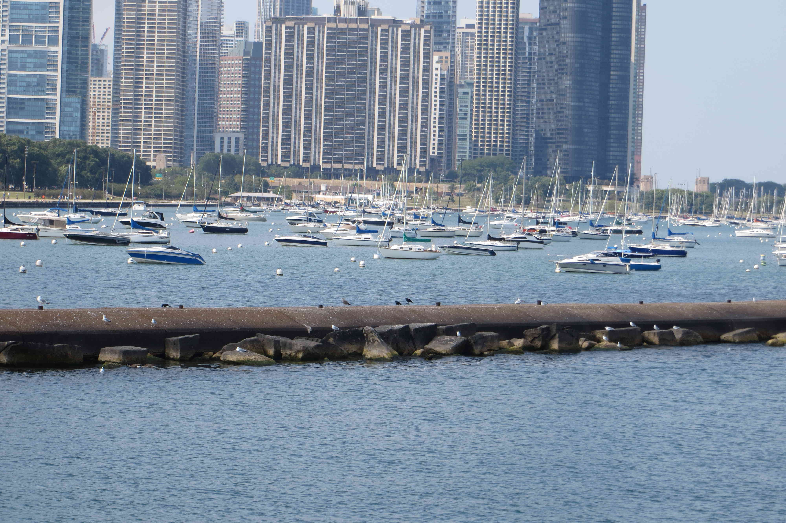
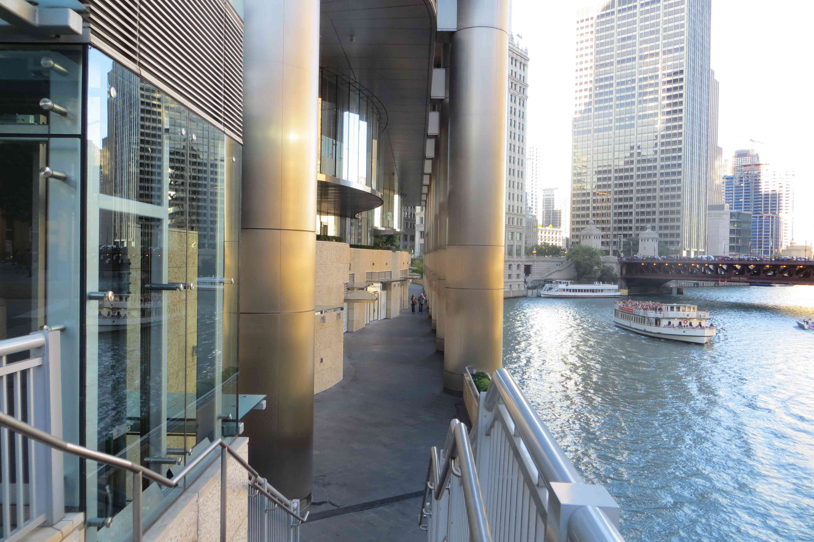
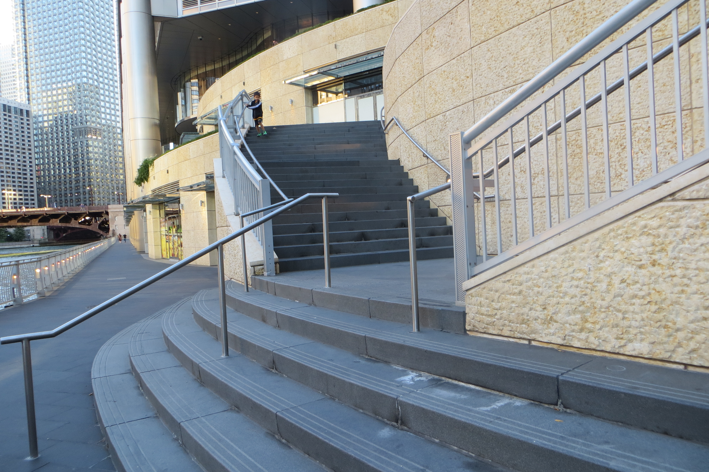
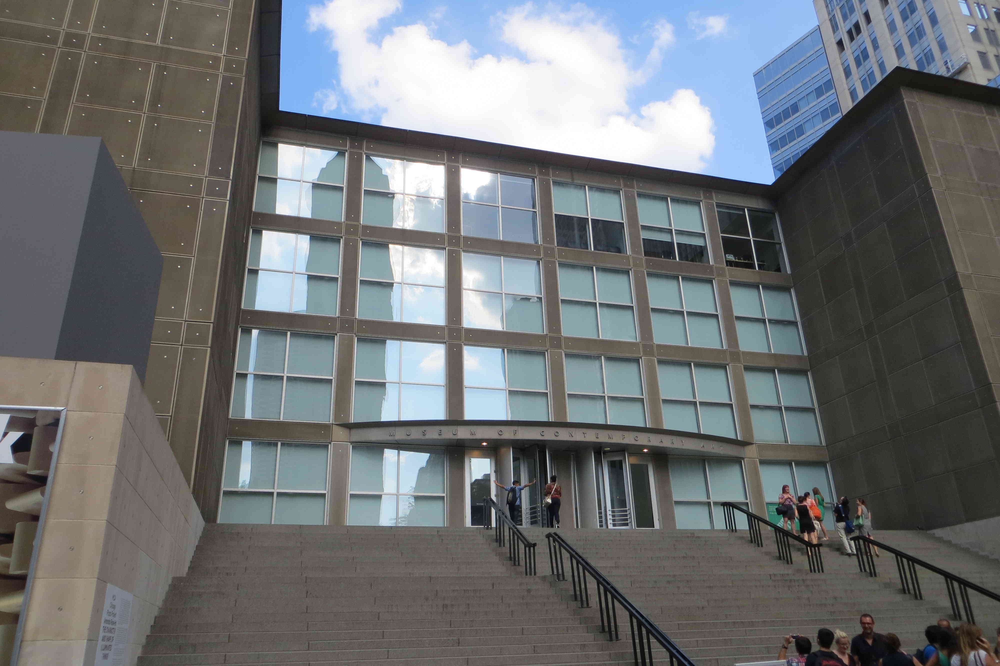

Photos showing off the beautiful city of Chicago along the lakefront of Lake Michigan.


Trump Tower, next to the Chicago River, and the plaza surrounding it.

Photos of the Museum of Contemporary Art, and the Art Institute of Chicago